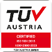

ESTÁ EMPRESA REDUZ SEU
IMPACTO AMBIENTAL
UTILIZANDO EMBALAGENS PALMA SUL
COM MATERIAL 100% RECICLADO
Certifique suas práticas sustentáveis e fortaleça a confiança de clientes,
parceiros e do mercado.

DE CATADORES
IMPACTO E DESGASTES
CERTIFICAÇÕES QUE COMPROVAM

ISO 9001 (TÜV AUSTRIA)
Organização internacional de inspeção e certificação, reconhecida globalmente por auditar e assegurar padrões de gestão.
- PROCESSOS PADRONIZADOS E EFICIENTES;
- QUALIDADE EM CADA ETAPA DE PRODUÇÃO;
- MELHORIA CONTÍNUA DOS NOSSOS PRODUTOS E SERVIÇOS;
- MAIS SEGURANÇA E CONFIANÇA NA ENTREGA.

ECOSELO ISOPOINT
Instituição brasileira de certificação que atesta a natureza ambiental, garantindo embalagens sustentáveis.
- PRODUÇÃO COM MENOR IMPACTO AMBIENTAL;
- COMPROMISSO COM PRÁTICAS SUSTENTÁVEIS;
- REDUÇÃO DA PEGADA DE CARBONO;
- UMA ESCOLHA MAIS RESPONSÁVEL PARA O SEU NEGÓCIO.

INSTITUTO BRASILEIRO DE
DEFESA DA NATUREZA
DEFESA DA NATUREZA
Selo concedido pelo IBDN, atestando que a empresa adota práticas ambientais responsáveis.
- EMPRESA COMPROMETIDA COM RESPONSABILIDADE AMBIENTAL;
- GESTÃO ÉTICA E CONSCIENTE;
- PRÁTICAS ALINHADAS AO DESENVOLVIMENTO SUSTENTÁVEL;
- VALORIZAÇÃO DE INICIATIVAS QUE GERAM IMPACTO POSITIVO.

SELO VERDE MORRO DA FUMAÇA
Reconhecimento às organizações que adotam práticas ambientais e sociais em seus processos.
- RECONHECIMENTO PELAS BOAS PRÁTICAS AMBIENTAIS;
- INCENTIVO À PRESERVAÇÃO E AO USO CONSCIENTE DOS RECURSOS;
- COMPROMISSO COM A COMUNIDADE LOCAL;
- UM FUTURO MAIS SUSTENTÁVEL.

SOBRE NÓS
Fundada em Santa Catarina, a Palma Sul iniciou suas atividades em 2013 no segmento de embalagens para a INDÚSTRIA QUÍMICA com um modelo de negócio de baixa emissão de carbono.
Nossa missão é desenvolver soluções em embalagens plásticas sustentáveis com qualidade assegurada, fortalecendo uma cadeia produtiva com valores presentes.
Valores importantes para nós:
- Comprometimento
- Sustentabilidade
- Inovação Tecnológica
- Foco nos clientes
- Valorização das pessoas
A valorização das pessoas que nos ajudam nessa jornada passa também pela transparência e por isso convidamos você a ver nosso: Relatório de Transparência e Igualdade Salarial de Mulheres e Homens 1º Semestre 2025.

DADOS DE MERCADO: A TENDÊNCIA
DO USO DE PLÁSTICO RECICLADO
A demanda por embalagens de plástico reciclado cresce continuamente, impulsionada por metas ESG,regulações ambientais e pela busca das empresas por soluções mais sustentáveis.
Em 2024, o Brasil produziu mais de 1 milhão de toneladas de resina reciclada, movimentando cerca de R$ 4 bilhões e gerando mais de 20 mil empregos diretos, fortalecendo o setor.
O setor seguirá em expansão, impulsionado por novas exigências legais para o uso de conteúdo reciclado nas embalagens e pelo aumento da demanda em segmentos como alimentos, bebidas, higiene e cosméticos.
+1 milhão de toneladas
de plástico reciclado +7,8% de crescimento
em relação a 2023 R$ 4 bilhões
movimentados 20 mil empregos
gerados Até 50% menos
impacto ambiental 22% de conteúdo
reciclado
de plástico reciclado +7,8% de crescimento
em relação a 2023 R$ 4 bilhões
movimentados 20 mil empregos
gerados Até 50% menos
impacto ambiental 22% de conteúdo
reciclado
XX empresas de XX
estados já utilizam.
Quer levar esse impacto positivo
para sua empresa também?
TIME COMERCIAL